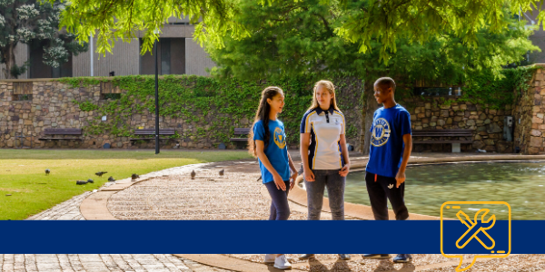
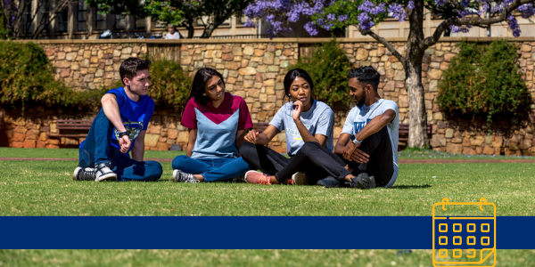

About
Staff
Alumni
Give
Library
News and Events
Wits100
Homepage
Study at Wits
Students
Faculties and Schools
Teaching and Learning
Research
News
Search
Search the site
Search
Menu
Search
Search the site
Search
In this section
ulwazi
Student Email
Student Self Service
Password Reset
Accommodation
Clubs and societies
Examinations
Graduations
Wits Sport
VOW FM
SETMU
Start main page content
Home
Students
Data Access
Student Email
Access ulwazi

Log a Support Ticket

Term Dates
MyWits
Study Related
Rules and Syllabuses
Term Dates
Examinations
Graduations
Postgraduate Research, and Development Office
Library
Book Lists
Technology Tools
Self-service
Student Email
Office 365
Wifi Setup
Password Reset
Printing
Quick Connect Guide
VTC software training
Student Support
First Year Experience
Accommodation
Student Fees
Financial Aid and Scholarships Administration
Hardship Fund
International Students
Development & Leadership Unit
Humanities Graduate Centre
Bus Service
Wits Writing Centre
Student Activities
Wits Sport
Clubs and Societies
Student Representative Council
Postgraduate Association
Community Outreach
Wits Shop
Health & Wellbeing
Counselling Services
Career Services
Campus Health
Disability Rights Unit
Gender Equity Office
Safety on Campus
Wits Integrity Hotline
Wits Covid-19 Resources
Student APPS
Wits Screening App
Student Crisis App
MySOS
Residence Maintenance
Meals Registration
Wits Dining
Policies & Regulations
2022 Student Code of Conduct
Student Academic Misconduct Policy
Admissions Policy
Grievance Procedures
Student Discipline
Governance Structure & VC's Advisory Bodies
Hierarchy of Academic Governance
Social Media Policy
Important Contacts
General Enquiries
Protection Services
Student Crisis Line
Covid-19 Contacts
Share
Tweet
Close